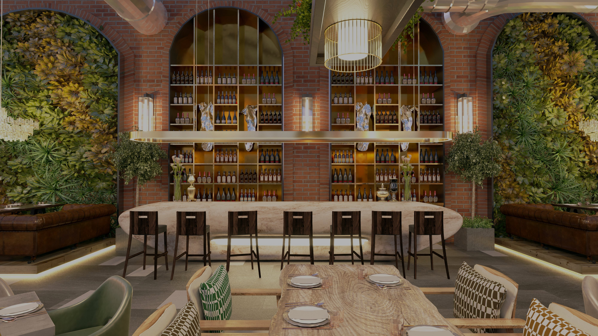
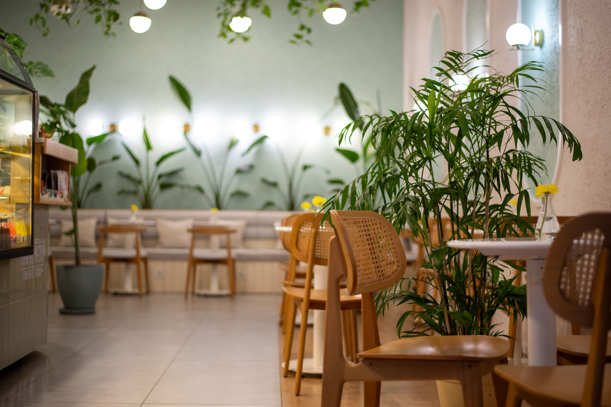

We bring the warmth and charm of traditional Italian cafés to the heart of the city. From handcrafted espresso and freshly baked pastries to authentic lunch dishes, every visit is designed to feel like a small escape to Florence.
Our Story
Premium Italian beans brewed by skilled baristas.
Baked fresh every morning using traditional recipes.
Fresh ingredients carefully sourced from trusted suppliers.
Monday–Thursday5:00 PM – 10:00 PM
Friday–Saturday5:00 PM – 11:00 PM
Sunday4:00 PM – 9:00 PM